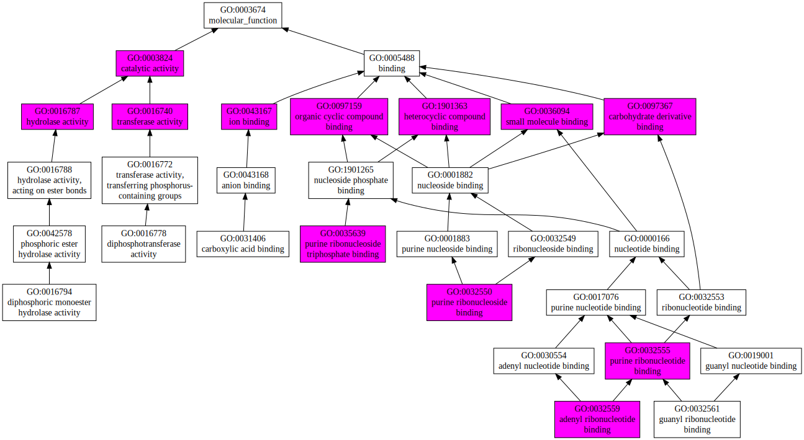
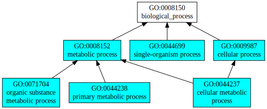
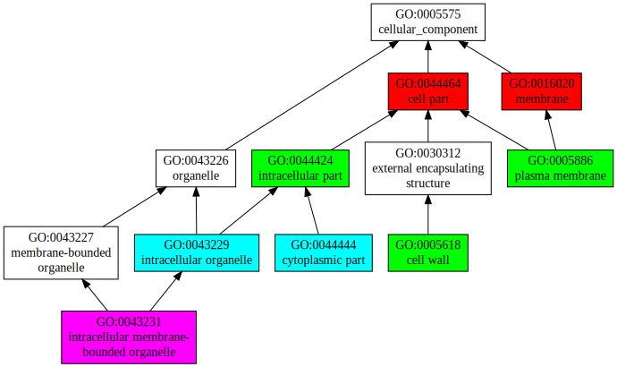

Input Sequence in FASTA format
>NX_Q9NRQ5 (59 residues)
MRQLKGKPKKETSKDKKERKQAMQEARQQITTVVLPTLAVVVLLIVVFVYVATRPTITE
|
Predicted Secondary Structure
| Sequence |
20 40
| |
MRQLKGKPKKETSKDKKERKQAMQEARQQITTVVLPTLAVVVLLIVVFVYVATRPTITE |
|
Prediction | CCCCCCCCCCHHHHHHHHHHHHHHHHHHHHHHHHHHHHHHHHHHHHHHHHHHCCCCCCC |
|
Confidence | 97678985305699999999999999876320137889999999999863113765459 |
| H:Helix;
S:Strand; C:Coil |
Predicted Solvent Accessibility
| Sequence |
20 40
| |
MRQLKGKPKKETSKDKKERKQAMQEARQQITTVVLPTLAVVVLLIVVFVYVATRPTITE |
|
Prediction | 75636554555446545544553462474032001233333303313202333335358 |
| Values range from 0 (buried residue)
to 8 (highly exposed residue) |
Predicted contact map used in C-I-TASSER simulation
 |
| C-I-TASSER simulation is guided by consensus contact map
(upper left triangle) derived based on confidence scores of
TripletRes (lower right triangle),
ResTriplet, ResPRE, and
NeBcon.
In the contact map, the axes mark the residue indexes along the sequence,
while each dot represents a residue pair with predicted contact.
No dot is close to the diagonal, because C-I-TASSER does not consider
contacts for residue pairs separated by <6 residues.
|
|
Top 10 threading templates used by C-I-TASSER
| Rank | PDB
hit | ID1 | ID2 | Cov | Norm.
Zscore | Downloadalignment | | 20 40
| | |
|---|
| SS
Seq | CCCCCCCCCCHHHHHHHHHHHHHHHHHHHHHHHHHHHHHHHHHHHHHHHHHHCCCCCCC
MRQLKGKPKKETSKDKKERKQAMQEARQQITTVVLPTLAVVVLLIVVFVYVATRPTITE |
|---|
| 1 | 6em5z | 0.09 | 0.08 | 3.22 | 1.01 | SPARKS-K | | --AKSLRASSHLNAKSVKRRGVFQKAVDAREQRISDKLKEDLLKQKLEDLKKKEEQG-- |
| 2 | 1x0tA1 | 0.18 | 0.17 | 5.51 | 1.10 | MUSTER | | VKR-RDWEKKEKKKIAIERIDTLFTLAERVAR---PDLAKRYVELALEIQKKAKVKIPR |
| 3 | 1zxaA | 0.24 | 0.14 | 4.24 | 1.07 | Neff-PPAS | | ILMLKEERIKELEKRLSEKEEEIQELKRKLHKCQ------------------------- |
| 4 | 2h3oA | 0.14 | 0.10 | 3.47 | 0.94 | SPARKS-K | | -------------LVILLGVVGLSALTGYLDYVLLPALAIFIGLTIYAIQRKRQAD--- |
| 5 | 6u0uA | 0.20 | 0.10 | 3.25 | 0.47 | FFAS-3D | | LKCLDGEDLNQGNRRRLQQLQQRDWIEQQI----------------------------- |
| 6 | 1w0bA | 0.29 | 0.24 | 7.22 | 0.30 | HHpred | | -QQVTG--------EPQERDKALQELRQELNTLANPFLAKYRDFLKSHELPSHPPPS-- |
| 7 | 6em5z | 0.11 | 0.10 | 3.68 | 1.00 | MUSTER | | AKSLRAS--SHLNAKSVKRRGVFQKAVDAREQRISDKLKEDLLKQKLEDLKKKEEQG-- |
| 8 | 5yhjA | 0.18 | 0.10 | 3.32 | 0.59 | CNFpred | | -------------------------VAVEVLNILRPTVAISVYVLFTVLALHQFPDVKE |
| 9 | 4p6vC | 0.27 | 0.15 | 4.68 | 0.47 | HHsearch-2 | | --------------------------DSIKKTFVVIALSLVCSIIVSAAAVGLRDKQKE |
| 10 | 1x0tA1 | 0.17 | 0.17 | 5.56 | 0.94 | Neff-PPAS | | IVKRRDWEKKEKKKIAIERIDTLFTLAERVARY-SPDLAKRYVELALEIQKKAKVKIPR |
| (a) | ID1 is the number of template residues identical to query divided by number of aligned residues. |
| (b) | ID2 is the number of template residues identical to query divided by query sequence length. |
| (c) | Cov is equal the number of aligned template residues divided by query sequence length. |
| (d) | Norm. Zscore is the normalized Z-score of the threading alignments. A Normalized Z-score >1 means a good alignment and is highlighted in bold. |
| (e) | Download alignment lists the threading program used to identify the template, and provide the 3D structure of aligned regions of threading templates (threading[1-10].pdb.gz). |
| (f) | Template residues identical to query sequence are highlighted in color. |
|
Top 5 final models from C-I-TASSER
|
|
|
|
| (a) |
C-I-TASSER simulations generate a large ensemble of structural
conformations, i.e. decoys. These decoys are clustered by
SPICKER based on pairwise structure similarity to
report up to five final models from the five largest clusters. Models are
ranked in descending order of cluster size. If the simulations converge
well, it is possible to have less than 5 models generated, which is
usually an indication of good model quality.
|
| (b) |
The model confidence is quantitatified by C-score, calculated based on
significance of threading template alignments and convergence of
C-I-TASSER simulations. C-score is typically in the range of [-5, 2],
with higher C-score signifies higher model confidence. |
| (c) |
Model TM-score and RMSD are estimated based on
C-score and protein length for the first model.
|
|
Proteins with similar structure
|
Top 10 structural analogs in PDB (as identified by
TM-align)
| (a) | Query structure is shown in cartoon, while the structural analog is displayed using backbone trace. |
| (b) | Ranking of proteins is based on TM-score of the structural alignment between the query structure and known structures in the PDB library. |
| (c) | RMSDa is the RMSD between residues that are structurally aligned by TM-align. |
| (d) | IDENa is the percentage sequence identity in the structurally aligned region. |
| (e) | Cov. represents the coverage of the alignment by TM-align and is equal to the number of structurally aligned residues divided by length of the query protein. |
|
Predicted Gene Ontology (GO) Terms
|

|
| Download full result of the above consensus prediction. |
| Click the graph to show a high resolution version. |
| (a) | CscoreGO is the confidence score of predicted GO terms. CscoreGO values range in between [0-1]; where a higher value indicates a better confidence in predicting the function using the template. |
| (b) | The graph shows the predicted terms within the Gene Ontology hierachy for Molecular Function. Confidently predicted terms are color coded by CscoreGO: |
| | [0.4,0.5) | [0.5,0.6) | [0.6,0.7) | [0.7,0.8) | [0.8,0.9) | [0.9,1.0] |
|
|
|

|
| Download full result of the above consensus prediction. |
| Click the graph to show a high resolution version. |
| (a) | CscoreGO is the confidence score of predicted GO terms. CscoreGO values range in between [0-1]; where a higher value indicates a better confidence in predicting the function using the template. |
| (b) | The graph shows the predicted terms within the Gene Ontology hierachy for Biological Process. Confidently predicted terms are color coded by CscoreGO: |
| | [0.4,0.5) | [0.5,0.6) | [0.6,0.7) | [0.7,0.8) | [0.8,0.9) | [0.9,1.0] |
|
|
|

|
| Download full result of the above consensus prediction. |
| Click the graph to show a high resolution version. |
| (a) | CscoreGO is the confidence score of predicted GO terms. CscoreGO values range in between [0-1]; where a higher value indicates a better confidence in predicting the function using the template. |
| (b) | The graph shows the predicted terms within the Gene Ontology hierachy for Cellular Component. Confidently predicted terms are color coded by CscoreGO: |
| | [0.4,0.5) | [0.5,0.6) | [0.6,0.7) | [0.7,0.8) | [0.8,0.9) | [0.9,1.0] |
|
|
|
Predicted Enzyme Commission (EC) Numbers
|
Top 5 enzyme homologs in PDB
| | Click on the radio buttons to visualize predicted active site residues. |
| (a) | CscoreEC is the confidence score for the Enzyme Commission (EC) number prediction. CscoreEC values range in between [0-1]; where a higher score indicates a more reliable EC number prediction. |
| (b) | TM-score is a measure of global structural similarity between query and template protein. |
| (c) | RMSDa is the RMSD between residues that are structurally aligned by TM-align. |
| (d) | IDENa is the percentage sequence identity in the structurally aligned region. |
| (e) | Cov. represents the coverage of global structural alignment and is equal to the number of structurally aligned residues divided by length of the query protein. |
|
Predicted Ligand Binding Sites
|
Template proteins with similar binding site:
Click
to view | Rank | CscoreLB | PDB
Hit | TM-score | RMSDa | IDENa | Cov. | BS-score | Lig. Name | Download
Complex | Predicted binding site residues |
|---|
| 1 | 0.01 | 2bxfA | 0.640 | 2.54 | 0.036 | 0.848 | 0.18 | DZP | complex1.pdb.gz | 12,13,16,17 |
| 2 | 0.01 | 2xw0A | 0.634 | 3.01 | 0.053 | 0.881 | 0.13 | 9NF | complex2.pdb.gz | 12,15,16,18 |
| | Click on the radio buttons to visualize predicted binding site and residues. |
| (a) | CscoreLB is the confidence score of predicted binding site. CscoreLB values range in between [0-1]; where a higher score indicates a more reliable ligand-binding site prediction. |
| (b) | BS-score is a measure of local similarity (sequence & structure) between template binding site and predicted binding site in the query structure. Based on large scale benchmarking analysis, we have observed that a BS-score >1 reflects a significant local match between the predicted and template binding site.
| | (c) | TM-score is a measure of global structural similarity between query and template protein. |
| (d) | RMSDa the RMSD between residues that are structurally aligned by TM-align. |
| (e) | IDENa is the percentage sequence identity in the structurally aligned region. |
| (f) | Cov. represents the coverage of global structural alignment and is equal to the number of structurally aligned residues divided by length of the query protein. |
|